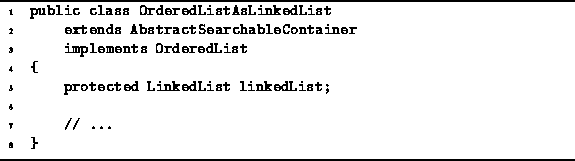

Data Structures and Algorithms
with Object-Oriented Design Patterns in Java
Data Structures and Algorithms
with Object-Oriented Design Patterns in Java
This section presents a linked-list implementation of ordered lists.
Program  introduces
the OrderedListAsLinkedList class.
The OrderedListAsLinkedList class extends
the AbstractSearchableContainer class introduced in
Program
and it implements the OrderedList interface
defined in Program .
introduces
the OrderedListAsLinkedList class.
The OrderedListAsLinkedList class extends
the AbstractSearchableContainer class introduced in
Program
and it implements the OrderedList interface
defined in Program .

Program: OrderedListAsLinkedList fields.
 Copyright © 1998 by Bruno R. Preiss, P.Eng. All rights reserved.
Copyright © 1998 by Bruno R. Preiss, P.Eng. All rights reserved.